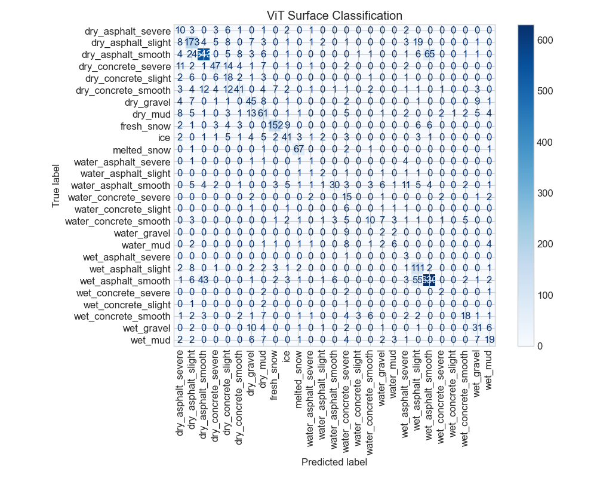
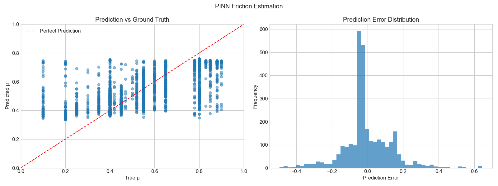
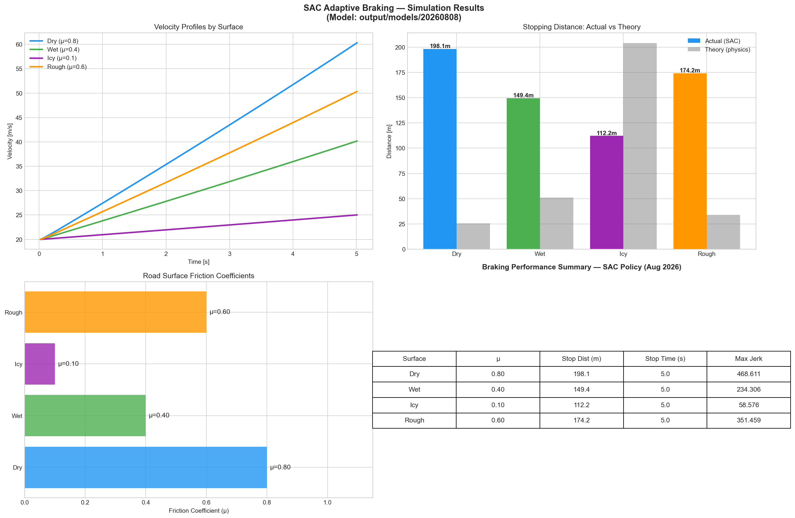

Generated on: 2026-08-11 16:50:39
Device: cpu
Evaluation Date: 2026-08-11 16:50:39
Overall Performance: ViT Accuracy: 69.3%, Temporal MAE: 0.0000, Fusion MAE: 0.1000, PINN MSE: 0.0187, Avg Stopping Distance: 75.73m
Classification Accuracy: 69.27%
| Metric | Value |
|---|---|
| Precision (Macro) | 0.4393 |
| Recall (Macro) | 0.4598 |
| F1 Score (Macro) | 0.4233 |
| Precision (Weighted) | 0.7299 |
| Recall (Weighted) | 0.6927 |
| F1 Score (Weighted) | 0.7019 |
| Class | Precision | Recall |
|---|---|---|
| dry_asphalt_severe | 0.1667 | 0.3448 |
| dry_asphalt_slight | 0.6705 | 0.7331 |
| dry_asphalt_smooth | 0.8873 | 0.8104 |
| dry_concrete_severe | 0.6438 | 0.5054 |
| dry_concrete_slight | 0.2368 | 0.4500 |
| dry_concrete_smooth | 0.6406 | 0.4100 |
| dry_gravel | 0.4592 | 0.5625 |
| dry_mud | 0.4880 | 0.5259 |
| fresh_snow | 0.8889 | 0.8172 |
| ice | 0.5775 | 0.5467 |
| melted_snow | 0.8171 | 0.9178 |
| water_asphalt_severe | 0.0833 | 0.1111 |
| water_asphalt_slight | 0.2000 | 0.2500 |
| water_asphalt_smooth | 0.7500 | 0.3371 |
| water_concrete_severe | 0.1948 | 0.6000 |
| water_concrete_slight | 0.0000 | 0.0000 |
| water_concrete_smooth | 0.4000 | 0.2273 |
| water_gravel | 0.0833 | 0.1538 |
| water_mud | 0.3750 | 0.2222 |
| wet_asphalt_severe | 0.0750 | 0.7500 |
| wet_asphalt_slight | 0.5236 | 0.8162 |
| wet_asphalt_smooth | 0.8898 | 0.8322 |
| wet_concrete_severe | 0.2500 | 0.2857 |
| wet_concrete_slight | 0.0000 | 0.0000 |
| wet_concrete_smooth | 0.6000 | 0.3273 |
| wet_gravel | 0.5167 | 0.5254 |
| wet_mud | 0.4419 | 0.3519 |
Sequence Reconstruction RMSE: 0.000000
Sequence Reconstruction MAE: 0.000000
R^2 Score: 1.000000
Friction Proxy RMSE: 0.138192
Friction Proxy MAE: 0.099985
R^2 Score: 0.586334
Mean Squared Error: 0.018710
R^2 Score: 0.593104
| Metric | Value |
|---|---|
| RMSE | 0.136784 |
| MAE | 0.096183 |
| Max Error | 0.644935 |
| Median Error | 0.056293 |
| Std Error | 0.136763 |
| MSE (Low Friction) | 0.063703 |
| MAE (Low Friction) | 0.222643 |
| MSE (High Friction) | 0.022660 |
| MAE (High Friction) | 0.110700 |
| Surface | Stopping Distance (m) | Stopping Time (s) | Max Jerk (m/s^3) |
|---|---|---|---|
| dry | 25.13 +/- 0.00 | 2.51 +/- 0.00 | 0.96 +/- 0.00 |
| wet | 50.15 +/- 0.00 | 4.98 +/- 0.00 | 0.16 +/- 0.00 |
| icy | 194.12 +/- 0.00 | 19.03 +/- 0.00 | 0.01 +/- 0.00 |
| rough | 33.50 +/- 0.00 | 3.34 +/- 0.00 | 0.46 +/- 0.00 |



[WARNING] ViT accuracy is below 90%. Consider: (1) More training data, (2) Larger model, (3) Better augmentation.
[WARNING] Low friction estimation has high error. This is critical for safety. Consider collecting more low-mu data.
[WARNING] Stopping distance on wet surface is >40m. Consider tuning the reward function or improving friction estimation.
[WARNING] Stopping distance on icy surface is >40m. Consider tuning the reward function or improving friction estimation.